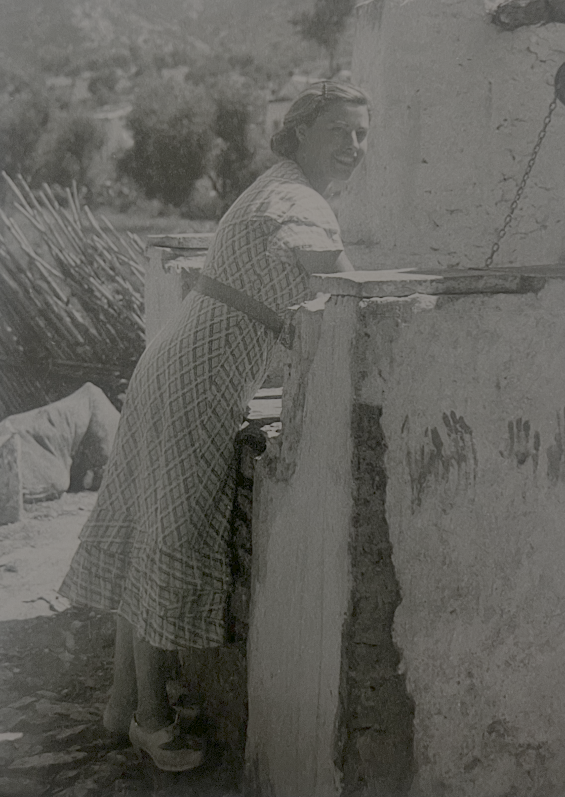
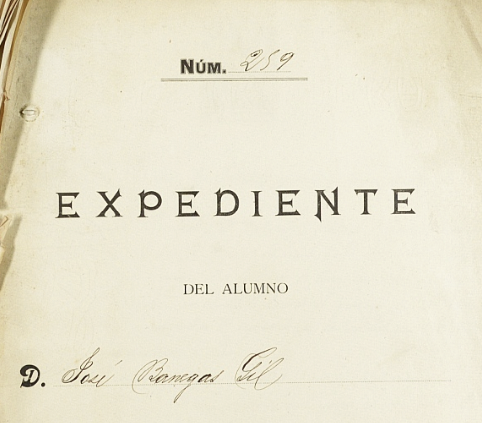
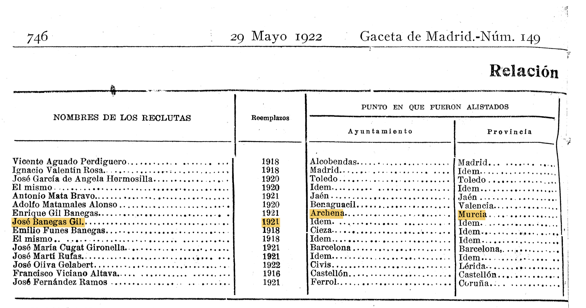
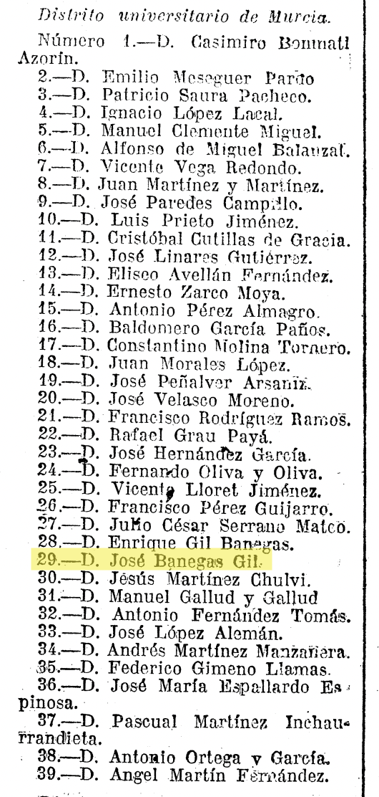
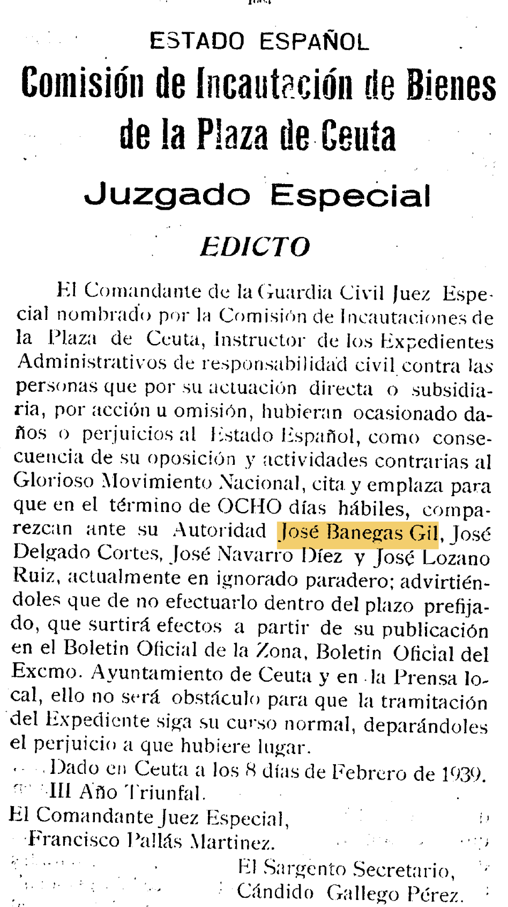
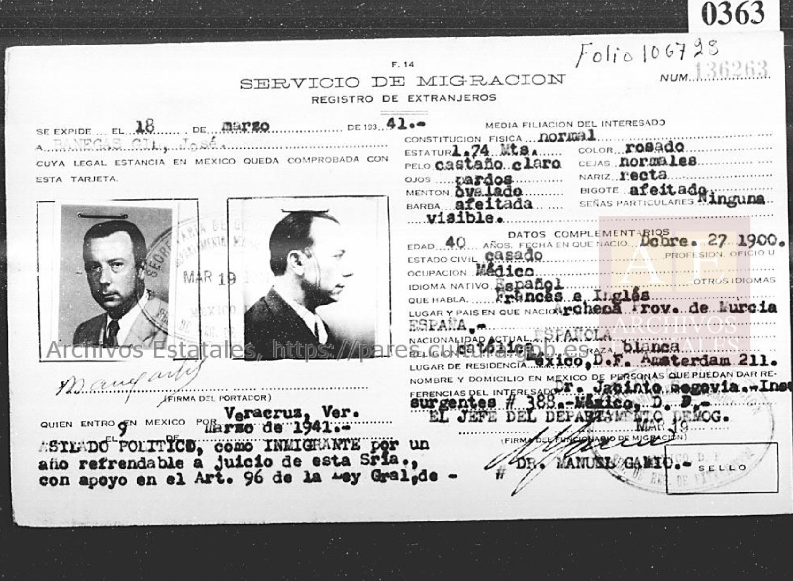
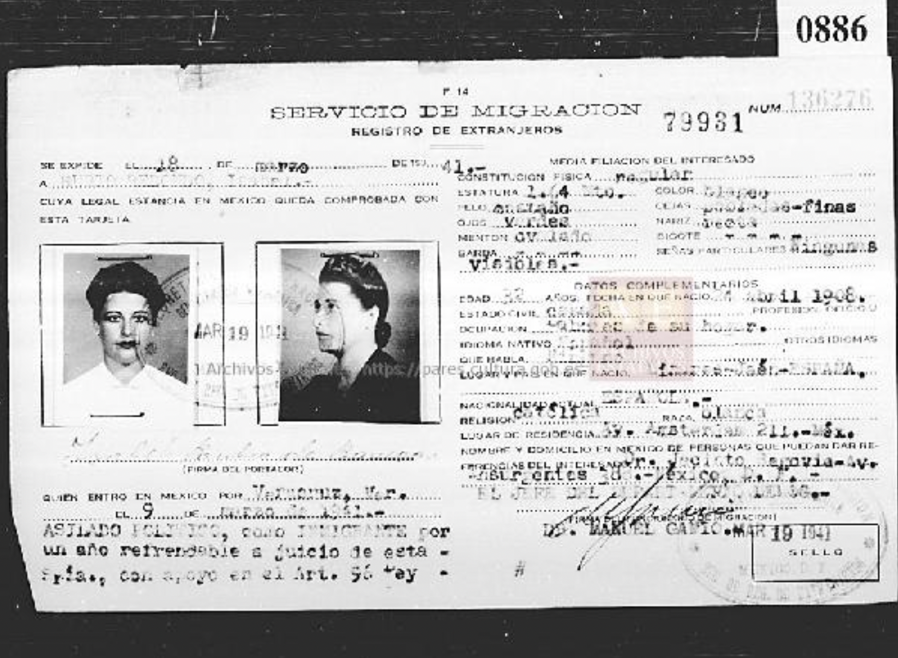

Escapando del Franqismo: La Vida de José Banegas Gil y su Familia
Introducción
Entre 1936 y 1950, se estima que 20.000 a 25.000 refugiados de la guerra civil española entraron a Mexico.1 La familia de José Banegas Gil cuenta en esta cifra.
Lo que sigue es una serie de fuentes primarias publicadas y al final recuerdos de la familia. En las notas al pie, se pueden encontrar los enlaces a los fuentes primerias publicadas.
Información Básica
José Banegas Gil nació el 27 de diciembre 1900 en Archena, Murcia, en la region de Murcia en España. Su esposa, Isabel Rubio Redondo, naciò el 24 de abril 1908 en Linares, Jaén en la region de Andalusia en España.

Juventud de José
Entre 1912 y 1918, José asistió el Instituto General y Tecnico de Murcia.2 Sigue al enlace en la nota al pie para ver su expediente académico que incluye su applicacion de 1912, información sobre sus papás, examen de ingreso, y todas de sus califaciónes.

En la Gaceta de Madrid en 1922 José fue nombrado como reclutado al ejercito en el 1921.3

En 1927 José aparece en una lista en la Gaceta de Madrid de doctores que han aprobado el examen para ingresarse al Cuerpo de Inspectores m unicipales de Sanidad.4

España en Crisis
PARRAFO DE BACKGROUND INFO Para los años 30, España habia llegado a un periodo de crisis.5
Law of Political Responsibilities - 9 Feb 1939 [explain and find source]
En el Boletín Official de Ceuta en el 23 de febrero, 1939, José fue emplazado por la Comisíon de Incautación de Bienes de la Plaza de Ceuta por su “oposición y actividades contrarias al Glorioso Movimiento Nacional”.6

Cinco semanas después, las Nacionalistas entrarón a Madrid y Franco declararía victoria en el 1 de april, 1939 y empezó la dictadura Franquista que duró hasta su muerte en 1975.7
Solicitando Asilo
Justo el dia siguente en el 2 de abril, 1939, José escribe cartas al consulado Mexicano en Francia solicitando asilo politico para el y su esposa y tres hijos.
[insert the three letters here]
Escapando por Mexico
En el 20 de febrero en 1941, la familia llego a San Juan, Puerto rico en un barco de vapor que se llamaba Cuba.
(add Ancestry.com pic of manifest)
En el 9 de marzo 1941, la familiia entraron Mexico por la puerta de Veracruz en un barco de vapor que se llamaba Monterrey que habia salida la isla de Cuba.
Entrando Mexico


José sigue aparaciendo en las noticias
As his whereabouts were still unknown, José’s name would continue to appear in the newspaper in Spain.
Feb 1943
Nov 1943
21 de febrero 1946
José en Puebla, Mexico
- pic of José with other doctors
Recuerdos de la familia
Footnotes
Dolores Pla Brugat, “Refugiados Españoles En México: Recuento y Caracterización,” in Los Refugiados Españoles y La Cultura Mexicana: Actas de Las Segundas Jornadas Celebradas En El Colegio de México En Noviembre de 1996 (El Colegio de México, 1999), https://muse.jhu.edu/pub/320/oa_edited_volume/chapter/2573845.↩︎
“Expediente Académico de José Banegas Gil,” Archivo General de la Región de Murcia, https://archivogeneral.carm.es/archivoGeneral/arg.detalle_documento?idDetalle=3140559#.↩︎
Olaguer Feliu, “Reales Ordenes - Ministerio de La Guerra,” Gaceta de Madrid, no. 149 (May 1922): 745–46, https://www.boe.es/gazeta/dias/1922/05/29/pdfs/GMD-1922-149.pdf.↩︎
M. Anido, “Reales Ordenes - Ministerio de La Gobernación,” Gaceta de Madrid, no. 98 (April 1927): 235–36, https://www.boe.es/gazeta/dias/1927/04/08/pdfs/GMD-1927-98.pdf.↩︎
Teresa Kiss, “Guerra Civil Española,” Enciclopedia Humanidades, May 24, 2025, https://humanidades.com/guerra-civil-espanola/.↩︎
Cándido Gallego Pérez, “Juzgado Especial - Edicto: Comisión de Incautación de Bienes de La Plaza de Ceuta,” Boletín Oficial de Ceuta, no. 658 (February 1939): 4.↩︎
Kiss, “Guerra Civil Española.”↩︎